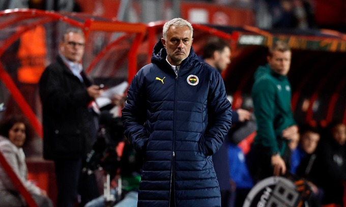
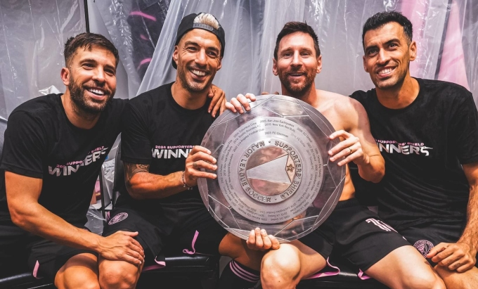

Du lịch
Văn hóa
Giải trí
Thể thao
Thể Thao

Mourinho: 'Tôi từng là cầu thủ tệ hại'
Tin tức thể thao
HLV Fenerbahce Jose Mourinho lấy quá khứ cầu thủ nhạt nhòa của bản thân để bênh vực một học trò mắc lỗi trong trận hòa Twente 1-1 ở lượt hai Europa League.

'Mọi thứ Messi chạm vào đều biến thành vàng'
Tin tức thể thao
Người hâm mộ Mỹ phấn khích sau khi Lionel Messi giúp Inter Miami lần đầu trong lịch sử giành Suppotter' Shield.